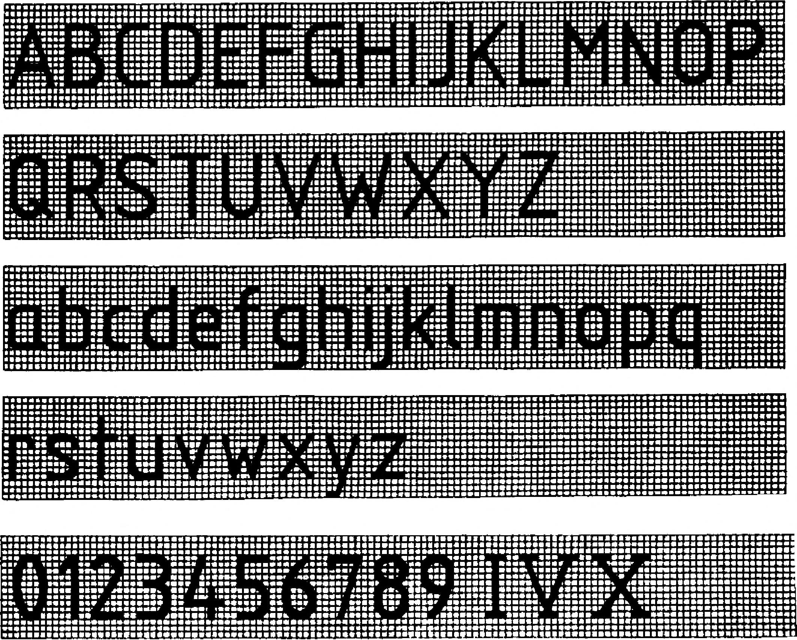

1. Alaki és formai ismeretek 1.6. Szabványírás A gépészeti rajzok feliratainak - szöveg, számok és jelek olvashatósága különösen fontos. Ezért a betűk, a számok és a jelek alakját és méreteit a szabványok gondosan előírják. A rajzokon szereplő feliratokkal szembeni elvárások: - az olvashatóság - az egységesség - alkalmasság mikrofilmezésre Az olvashatóságon azt kell érteni, hogy ne térjünk el a szabványban megadott írás alak- és méretelőírásától. Az egységesség azt jelenti, hogy egy termékről készített összes rajzon az írás típusa és helyzete azonos legyen. Műszaki rajzok felirata lehet álló, vagy a vízszinteshez képest 75 °-os dőlésszögű, keskeny (A típusú), illetve közepes (B típusú) szélességű. A gépész rajzokon a B típusú szabványírást használjuk. Az álló "B típusú” szabványírás (28. ábra) geometriai jellemzői és betűjele: h c a b e d aranyai: 10/1 Oh 7/1 Oh 2/1 Oh 14/1 Oh 6/1 Oh l/10h szerinti geometriai az álló betűírás - irasnagysag - kisbetűk magassága - betűköz - legkisebb sorköz - szóköz - vonalvastagság A dőlt betűs szabványírás 29. ábra jellemzői és arányai megegyeznek paramétereivel, csak a betűk alakja dől jobbra a vízszinteshez képest 75°-ra, illetve a függőlegeshez képest 15°-ra. Az A típusú és B típusú szabványírás geometriai jellemzői és méretei az 30. ábrán láthatók. Az írástípusok alapmérete a nagybetűk h magassága, amelyet írásmagasságnak ( írásnagyságnak ) nevezünk. Az írásnagyságok értékeinek sorrendje a papírlapok szabványos méretnövekedésének arányával egyezően V2 -vei való szorzásból származik. Az írásmagasság ismeretében a B típusú szabványírás arányait és méreteit foglalja össze a 3. táblázat. A feliratokat a legegyszerűbben betűsablonnal készíthetjük el. A "B típusú” álló szabványírás alakját mutatja az egységvonalkázású hálóban az 31. ábra. A nagybetűk szélességi jellemzői: 1/10 h szélességű : I 4/10 h szélességű : J 5/10 h szélességű : C; E; F; L 6/10 h szélességű : B; D; G; H; K; N; O; P; Q; R; S; T; U; Z 7/10 h szélességű : A; M; V; X; Y 9/10 h szélességű : W A kisbetűk szélességi jellemzői: 1/10 h szélességű : i 2/10 h szélességű : j 3/10 h szélességű : c; e; f; 1 4/10 h szélességű : b; d; g; h; k; n; o; p; q; r; s; t; u; z 5/10 h szélességű : a; m; v; x; y 7/10 h szélességű : w A számjegyek szélességi jellemzői: 3/10 h szélességű : 1 5/10 h szélességű : 2; 3; 5; 6; 7; 8; 9; 0 6/10 h szélességű : 4 A ”B típusú” álló szabványírás számjegyeinek alakját is mutatja egységvonalkázású hálóban a 31. ábra. Az írás típusa sortávolság arány írásmagasság, h 2,5 | 3,5 | 5 | 7 | 10 | 14 | 20 Méretek, mm A (24/14 )h 4,2 6 8,4 12 16,8 24 33,6 B (18/10 )h 4,5 6,4 9 12,8 16 25,6 36 28. ábra | I ■ ! -O 1 1 1 j I I ! I I U .e fl r r 1 1 I 1 i 1 1 i r ■ L L 1 I í ■ I I ! L ■ ... 1 L L L J In L M V 1 ji a m Betú-^ s2elesseg 29. ábra A szabványírás geometriai jellemzői szélesség 30. ábra B típusú szabványírás arányai 3. táblázat Megnevezés Irásmagasság (írásnagyság) Nagybetűk magassága h Kisbetűk magassága túlnyúlás és kinyúlás nélkül c A jelek közötti távolság Betű köz a Az alapvonalak legkisebb távolsága. Legkisebb sor-köz b A szavak közötti legkisebb távolság. e Szóköz Vonalvastagságok Sortáv (10/10) h (7/10) h (2/10) h (14/10) h (6/10) h (1/10) h Méret, mm 2,5 0,5 3,5 1,5 0,25 3,5 2,5 0,7 2,1 0,35 3,5 0,5 1,4 10 4,2 0,7 10 14 14 10 2,8 20 8,4 1,4 20 14 28 12 3 1 . ábra 10
